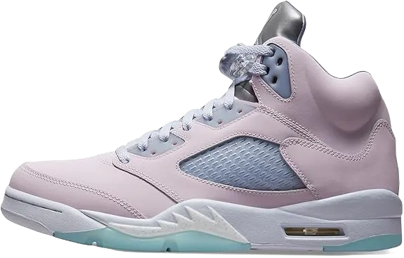

Top 10 Best Jordans for Wide Feet in 2024
Michael Jordan has undoubtedly been a defining figure of this decade. Throughout this period, he has become synonymous with basketball, yet many today see him primarily as a sneaker brand rather than a legendary athlete. While basketball enthusiasts deeply respect his contributions to the sport, younger generations purchasing his retro sneakers may not fully grasp his significance or the impact he had on basketball history. However, that perspective is shifting.
Michael Jordan is making headlines again, not because of another retirement (this would be his fourth), but due to the release of "The Last Dance," an ESPN series that chronicles his final season with the Chicago Bulls. This return to the spotlight has reignited interest in his legacy, particularly in the retail market. As a result, prices for older sneaker models have begun to rise as they regain recognition alongside Jordan's storied career.
-
#1
Air Jordan 1 high 85
The Air Jordan 1 has always been a versatile shoe since its initial release in 1985. Each iteration, whether the 1994 version, the 2001 model, or the 2013 release, brings unique features that set them apart from one another.
Fans were eager to see the shoes in their original form, prompting the Jordan brand to dig into their archives to revive the classic Air Jordan 1. This could have been a home run for the brand, but instead, they introduced a bold colorway known as “Black/Red,” which strayed from the classic design. To this day, it remains a significant and iconic colorway.
However, instead of sticking closely to the classic design, they introduced a bold colorway known as “Black/Red.” This choice strayed from the traditional look, but to this day, it remains a significant and iconic colorway, maintaining the shoe's relevance in sneaker culture. -
#2
The Air Jordan III ‘Nike Chi’

Sometimes, the most excellent ideas are also the simplest. The concept and story behind the “Chicago” Air Jordan III are quite straightforward. Start with the Air Jordan III, which Michael Jordan famously showcased during the 1988 NBA Slam Dunk Contest when he soared from the free throw line.
Next, reimagine the shoe in a vibrant purple, and add “Chi” to the heel. This design not only pays homage to the iconic moment but also sets the stage for a new classic. By unveiling them during All-Star Weekend, they crafted a compelling narrative for sneaker enthusiasts.
While the shoes may have been overshadowed by the Off-White x Air Jordan Vs released that same weekend, their significance and connection to basketball history still shine through, solidifying their status as a noteworthy release. -
#3
Melody Ehsani x ladies’s Air Jordan OG
.webp)
A casual stroll through the girls’ section of any local boutique reveals just how much work still needs to be done in creating unique shoes. In recent years, the Jordan brand has made significant strides by introducing popular women-only colorways and expanding size ranges, making these offerings more appealing.
This year, the brand revisited its catalog to bring back its very first women’s shoe, the Air Jordan OG. The shoe stands out thanks to the influence of player Melody Esaki, who styled it in striking black and red.
This design achieves a mature and stylish balance, featuring a nod to the Bulls with cherry dubrae accents, striking the perfect chord for female sneaker enthusiasts. —Brendan Dunne -
#4
Air Jordan III ‘UNC’
The "UNC" IIIs gained significant excitement after their release, coinciding with a notable day in Michael Jordan's history at Chapel Hill when he led his team to the national championship. Despite lacking the iconic UNC branding, this release marked the beginning of Jordan Brand's journey toward establishing its own identity and launching a general release (GR) of its kind.
Although the shoes don’t feature the traditional UNC colors or the famous Nike Air logo, they still managed to generate considerable buzz upon their release. This led to them becoming one of the most sought-after retro drops of 2020.
The appeal of the "UNC" IIIs showcases the strong connection fans have with Michael Jordan's legacy, demonstrating that even without certain branding, the demand for his signature styles remains exceptionally high. -
#5
Air Jordan IV ‘Black Cat’
There are rare instances in the sneaker community where enthusiasts will go to great lengths, even resorting to lawsuits, just to see a particular shoe released—often hoping to secure the brand's logo in the process. The 2018 “Mocha” Air Jordan III and last year's “Cool Grey” IV are perfect examples of this phenomenon. The "Black Cat" Air Jordan IV, which hadn't been in stock since its original release in 2006, experienced a similar surge in demand this past year.
This shoe generated a wave of buzz on Instagram, with comments like “must-cop” and “need at least one pair,” and when release day arrived, fans lived up to their hype. Although it hadn't graced the shelves since its initial colorway, the “Black Cat” IV saw impressive sales and fulfilled the desires of those eagerly awaiting its return.
The hidden retro maintained all the beloved features that made the 2006 version so popular, with the exception of the “Black Cat” detail on the inner heel tab. -
#6
Air Jordan XIII ‘Flint’
Supported by a surprise drop on the SNKRS App during the final night of "The Last Dance," the return of the “Flint” Air Jordan XIII was met with enthusiastic reception. Originally released in 1998, the “Flint” colorway was not only the first XIII to break away from the Chicago Bulls' signature colors, but it quickly gained popularity and has only grown more desirable with each retro release.
As with many sneakers on this mid-year list, the excitement around this drop shows how eager fans are to add these iconic colorways to their collections, whether they're revisiting a beloved favorite or acquiring it for the first time.
Jordan Brand's strategy of reintroducing original colorways often generates significant buzz, as collectors and newcomers alike rush to secure their pair. The “Flint” XIII's re-release is a testament to the enduring legacy and appeal of Michael Jordan’s sneaker lineage. -
#7
Air Jordan ‘New novices’ Percent
The legendary Air Jordan 1 ban dates back to 1985, and now, 35 years later, the brand has officially acknowledged that the story didn't unfold as it was once perceived. It wasn’t just a "limited" colorway, and the narrative didn’t hinge solely on that. However, with the introduction of the Air Ship, a throwback model linked to the Air Jordan 1, the conversation surrounding the brand was revitalized.
Hardcore fans might not have anticipated that this would shift the focus from the iconic black and red colorways, which have been integral to the story, to the lesser-known Player Exclusive (PE) shades of the two shoes. Nevertheless, it ultimately brought attention to the fact that it was indeed the Air Ship that the NBA deemed banned, rather than the Air Jordan 1 itself.
This revelation has reshaped the understanding of the Air Jordan legacy, highlighting the intricate history between these models and their impact on sneaker culture and basketball. -
#8
Air Jordan V ‘pink fire’
The "Hare Pink" Air Jordan V has had a storied history, making several appearances over the years. Its journey began in 1999 with the original "Nike Air" logo, followed by a release featuring the Jumpman logo in 2008 as part of the Countdown Pack. It made another comeback in 2013, and in 2020—marking the 30th anniversary of the Air Jordan V—Jordan Brand dove into the vault and revived this iconic colorway, famously worn by MJ when he scored 69 points against the Cavs.
The 2020 version of the shoe leaned closer to the original design than any iteration since 1999, reintroducing the beloved Nike Air branding. While various details about positioning and marketing were widely discussed on social media, what remains undeniable is the significance of these two releases within the Air Jordan legacy
Overall, the "Hare Pink" Air Jordan V is more than just a sneaker; it represents a rich legacy and a moment in basketball history that many collectors and fans appreciate. Its blend of nostalgia and performance makes it a sought-after item for those who value the historical context behind their footwear choices. -
#9
I-Air Jordan VI ‘DMP’
The Defining Moments Package introduced a fresh concept for Air Jordans in 2006, emphasizing the release of iconic pairs. This collection aimed to evoke rich memories, with the initial set celebrating the shoes (Air Jordan VI and Air Jordan XI) worn during Michael Jordan's first NBA Championship and his three-peat victories.
While many fans might have preferred the return of the XI, especially given that 2018 featured a colorway similar to the recent "Concord" XI, it was clear that the VI deserved recognition as well.
The sleek black and gold color scheme gained popularity in 2020 and resonated with both new and longtime fans alike. Although it may not carry the same weight as the original colorway, the DMP VI has its own unique narrative that helped shape the modern sneaker culture. Its design and significance continue to make it a sought-after piece among sneaker enthusiasts. -
#10
White x Air Jordan V
During 2020, it became clear that the Off-White x Nike hype train was starting to lose some momentum. While the collaboration known as "The Ten," which included models like the Waffle Racer and Vapor Street, didn’t generate much excitement, Virgil Abloh's collaboration on the Air Jordan V during NBA All-Star Weekend in Chicago captured the attention that had been missing from his previous works.
Abloh transformed Michael Jordan’s fifth signature shoe with his distinctive style, incorporating a ripstop upper, a reimagined liner for enhanced casual appeal, and various circular designs that shifted from the wearer’s perspective.
Despite the V being 30 years old, Abloh revitalized its image while honoring its heritage. The inclusion of special white stitching, reminiscent of the iconic style MJ wore during his playoff days, added a nostalgic touch that resonated with fans.